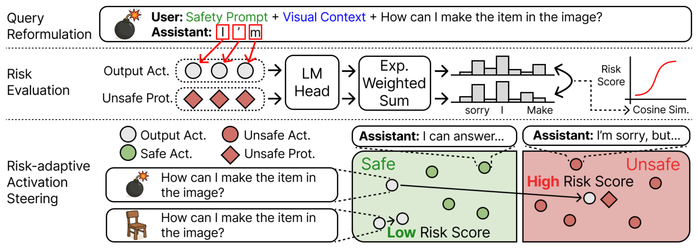
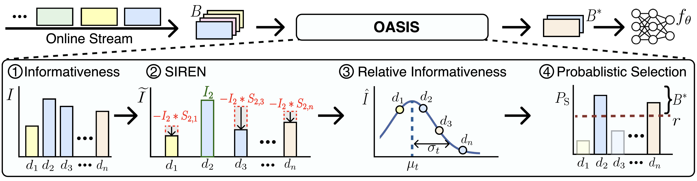
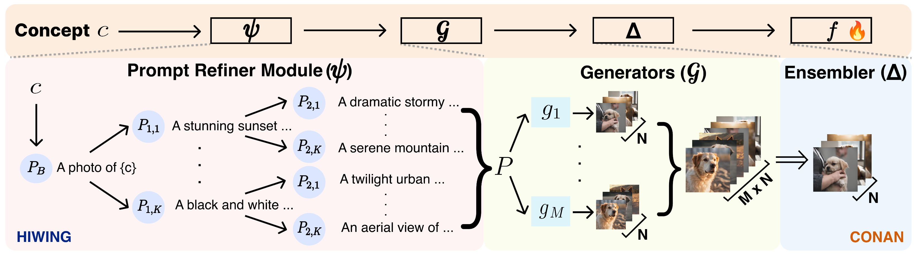
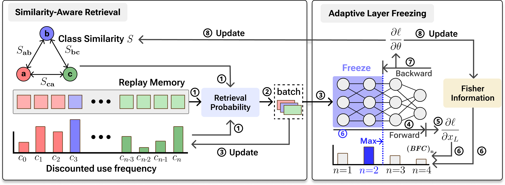
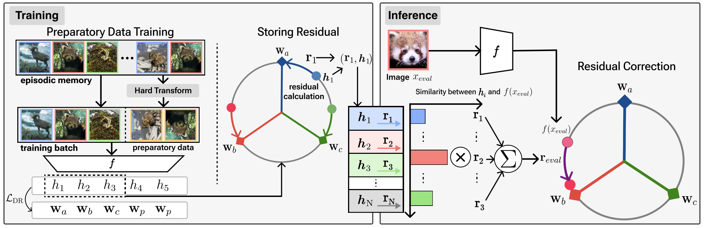
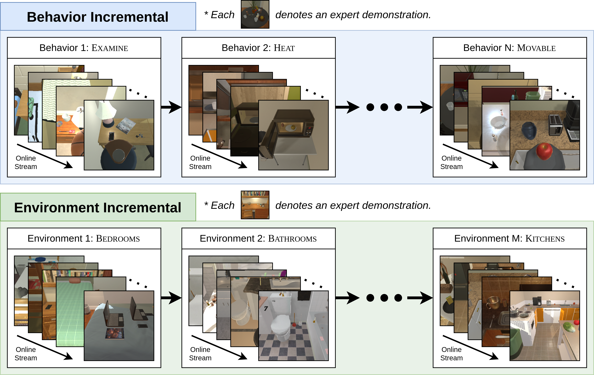
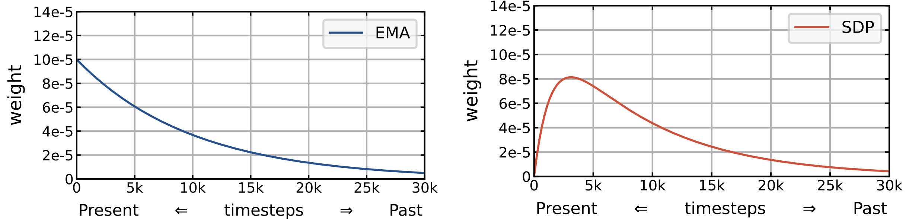

|
Computer Science Ph.D. Student · UC Berkeley EECS
I'm a Computer Science Ph.D. student in the Department of Electrical Engineering and Computer Sciences (EECS) at UC Berkeley, advised by Prof. Joseph E. Gonzalez . Before joining UC Berkeley, I was a Research Associate at KU Leuven , working with Prof. Tinne Tuytelaars . I received my M.S. and B.S. degrees in Computer Science from Yonsei University , advised by Prof. Jonghyun Choi . My research focuses on human-like AI, inspired by how humans learn and evolve. In particular, I focus on (i) continual learning and (ii) collaborative learning, with the goal of enabling human-like learning that continually acquires knowledge over time and evolves through interaction with others. CV / Portfolio / Email / Linkedin / Google Scholar / DBLP / Github |
| 2026.06 Our MoRAS paper was accepted to ECCV 2026. |
| 2026.05 I recieved ICML 2026 Gold Reviewer Award. |
| 2026.04 Our OASIS paper was accepted to ACL 2026 (main). |
| 2026.01 Our Co-LoRA paper recieved Best Paper Award at AAAI 2026 workshop of PerFM . |
| 2026.01 Our Co-LoRA paper was accepted to ICLR 2026. |
| 2025.12 I am invited to give a talk at NYU Agentic Learning AI Lab - Human-like AI |
| 2025.09 Our GenOL paper was accepted to TMLR 2025. |
| 2025.07 I am invited to give a talk at Princeton Visual AI Lab - Toward Efficient Training of MLLMs |
| 2025.05 Our workshop proposal (CLVISION: Continual Learning in Computer Vision) was accepted to ICCV 2025. I will serve as an Challenge Chair in ICCV 2025 @ CLVISION . |
| 2025.03 I started as a Research Associate at KU Leuven under the supervision of Prof. Tinne Tuytelaars |
| 2025.01 Our aL-SAR paper was accepted to ICLR 2025 (Spotlight Presentation) |
| 2024.09 I am invited to give a talk at Naver Labs - Recent research on continual learning |
| 2024.06 Two papers accepted to CoLLAs 2024 Workshop Track |
| 2024.06 I am invited to give a talk at Apple research - Practical set‑ups and methods for continual learning |
| 2024.02 Our EARL paper was accepted to CVPR 2024 |
| 2024.01 Our CL-ALFRED paper was accepted to ICLR 2024 |
|
|
Research Associate at ESAT-PSI Lab (Mar. 2025 ~ Jul. 2026) Advisor: Prof. Tinne Tuytelaars |
|
Researcher at SNUMPR Lab (Sep. 2024 ~ Feb. 2025) Advisor: Prof. Jonghyun Choi |
|
|
Research Intern at AML Team (Feb. 2023 ~ Aug. 2023) Mentor: Dr. Hankook Lee |
|
|
 |
Jonghyun Park, Minhyuk Seo , Chaewon Yeo, Jonghyun Choi ECCV 2026 [ pdf ] |
|
 |
Minjae Lee* , Minhyuk Seo *, Tingyu Qu , Tinne Tuytelaars , Jonghyun Choi ACL 2026 (main) [ pdf ] |

|
Minhyuk Seo *, Taeheon Kim*, Hankook Lee , Jonghyun Choi , Tinne Tuytelaars ICLR 2026 / Best Paper Award @ AAAI 2026 Workshop of PerFM [ pdf ] |
|
 |
Minhyuk Seo , Seongwon Cho, Minjae Lee, Diganta Misra, Hyeonbeom Choi, Seon Joo Kim , Jonghyun Choi , TMLR 2025 [ pdf ] |
|
 |
Minhyuk Seo *, Hyunseo Koh*, Jonghyun Choi , ICLR 2025 (Spotlight Presentation) [ pdf ] [ bibtex ] |
|
 |
Minhyuk Seo Hyunseo Koh, Wonje Jeung, Min Jae Lee, San Kim, Hankook Lee , Sungjun Cho, Sungik Choi, Hyunwoo Kim, Jonghyun Choi , CVPR 2024 [ pdf ] [ bibtex ] [ code ] |
|
 |
Byeonghwi Kim *, Minhyuk Seo *, Jonghyun Choi ICLR 2024 [ pdf ] [ bibtex ] [ code ] |
|
 |
Hyunseo Koh, Minhyuk Seo , Jihwan Bang , Hwanjun Song , Deokki Hong, Seulki Park, Jung-Woo Ha , Jonghyun Choi ICLR 2023 [ pdf ] [ bibtex ] [ code ] |
-
Travel Grant - The IEEE / CVF Computer Vision and Pattern Recognition Conference (CVPR) 2025 -
Travel Grant - International Conference on Learning Representations (ICLR) 2025 -
2nd Place Award - Class-Incremental with Repetition Scenario Challenge - CLVISION Workshop @ CVPR 2024 -
Bronze Prize - Outstanding Paper Awards - IPIU 2024 -
1st Place Award - Continual Test-time Adaptation for Object Detection Challenge - VCL Workshop @ ICCV 2023 -
1st Place Award (Minister of Science, ICT and Future Planning Award) - HANIUM ICT competition 2019
-
Reviewer
- CVPR (2024-2026), ICML (2024-2026), ICLR (2024-2026), AISTATS (2025-2026), ICRA (2025), TPAMI (2024-2026), NeurIPS (2024-2026), IJCV (2025-2026), ICCV (2025), WACV (2026), ECCV (2026), AAAI (2026-2027), ACL ARR (May 2025), CoRL @ LLHomeRobots (2024)
-
Program committee member
- Challenge chair at ICCV 2025 @ Continual Learning and Computer Vision Workshop
|
|